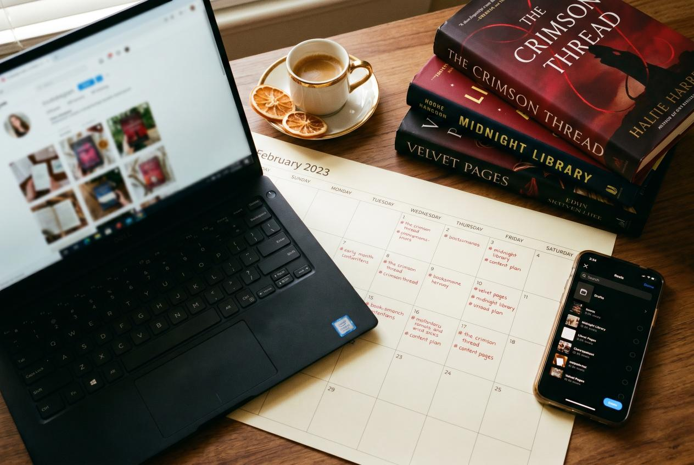
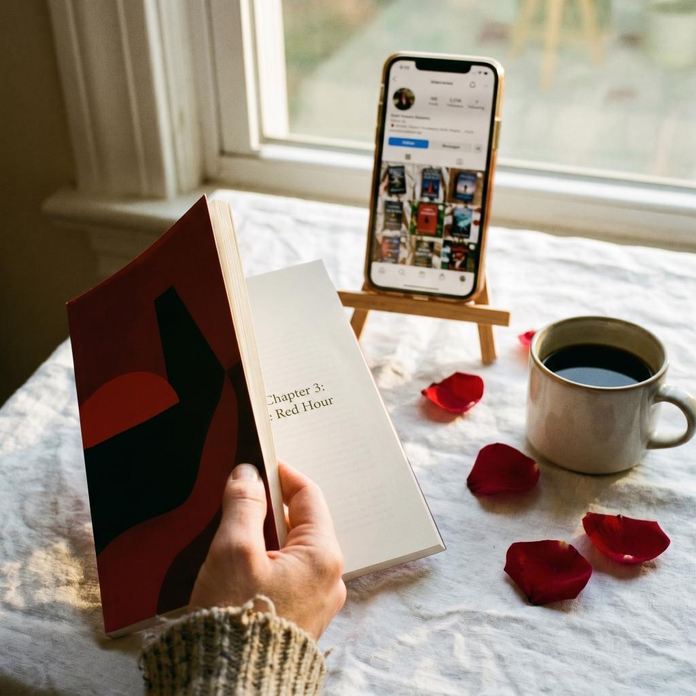

Bookstagram in 2026 is a strange place. The flat-lay-with-coffee aesthetic that defined the community in 2018 still works for engagement, but it doesn't move books. Reels drive reach but punish authors who post "buy my book" content. The algorithm rewards consistency, and yet most indie authors quit after six weeks of posting because the numbers feel too small to justify the time.
This is the working version of a Bookstagram strategy that actually compounds — what to post, how often, which hashtags still matter, how to use Reels without selling your soul, and the realistic conversion math from follower to book sale.
What Bookstagram Is (and Isn't) in 2026
Bookstagram is a sub-community of roughly 90 million Instagram posts tagged #bookstagram, #booksofinstagram, or genre-specific variants. The active reader-and-reviewer audience inside that hashtag cloud is much smaller — maybe 800,000 to 1.2 million accounts that post about books regularly and an order of magnitude more lurkers who buy based on what they see.
What it is:
- A discovery engine for fiction in romance, fantasy, thriller, literary, and YA
- A community where book reviewers expect to be sent ARCs in exchange for honest reviews
- A visual-first platform where cover, vibe, and aesthetic decide whether someone stops scrolling
What it isn't:
- A high-conversion sales channel by itself — IG bio links convert at 0.5–2% in this niche
- A non-fiction book launchpad (LinkedIn, Substack, and podcast tours outperform here)
- A platform where you can grow without showing your face on at least some Reels
If your book is fiction in a visual genre, Bookstagram earns its place in your stack alongside TikTok ads and editorial features. If your book is a B2B leadership guide, your time is better spent elsewhere.
The Three Content Types That Compound

Every successful Bookstagram account in 2026 cycles through three formats. Pick all three and rotate; don't try to win on a single format.
1. Static carousels (the workhorse)
Carousels still pull the highest save rate of any IG format in the books vertical. A 6–10 slide carousel with a strong hook on slide 1 can earn 200–800 saves on an account with 3,000 followers — saves are the algorithmic signal Instagram weighs most heavily in 2026.
Working carousel topics:
- "5 books I'd unread to read again for the first time" (genre-specific)
- "What [your protagonist] would have in her bag" — visual world-building
- "Tropes I'm tired of vs. tropes I'd die for" (polarizing = saves)
- Reading wrap-ups with mini-reviews for each book
- "If you loved [popular comp title] read this next" featuring your book at slot 3 or 4
Aim for two carousels per week. Slide 1 must be readable at thumbnail size — bold serif type, high contrast, no more than eight words.
2. Reels (the reach engine)
Reels are how new accounts find you. The algorithm pushes Reels under 30 seconds with a strong first-second hook to non-followers. An average Bookstagram Reel from a 2,000-follower account can hit 8,000–40,000 views in its first 72 hours when the hook lands.
The hooks that work:
- "POV: you just finished a book that ruined you for everything else"
- "If [trope] is your weakness, you need to read this immediately"
- "Three books to read if you can't stop thinking about [popular show]"
- "I wrote this scene at 2 a.m. and I still can't believe my editor let it through" + scene quote on screen
- Author-on-camera 12-second confessional ("I almost cut this character — here's what changed my mind")
Aim for three Reels per week. Trending audio matters less than it did in 2023 — original audio with a strong hook outperforms in 2026 because the algorithm now favors content that holds viewers past the three-second mark.
3. Stories (the relationship layer)
Stories don't grow your account, but they convert your existing followers from passive scrollers to actual readers. Daily stories — even rough, low-effort, behind-the-desk shots — produce a measurable bump in DM engagement and link clicks.
Use stories for:
- "What I'm working on today" with a photo of your draft / outline
- Polls ("which character should die?" performs absurdly well)
- Behind-the-scenes snippets of edits, cover reveals, ARC mailings
- "Ask me anything" stickers — cheap, fast, pulls DMs that turn into superfans
- Sharing reader-tagged photos of your book (creates a flywheel)
The Hashtag Math (Yes, It Still Matters)
Hashtags are not dead on Instagram in 2026. They just stopped being a discovery cheat code and became a categorization signal. The algorithm uses hashtags to figure out what your post is about and who to show it to. Used right, they expand reach by 10–25%; used wrong, they get you flagged as spam.
The working approach:
- 8–15 hashtags per post (not 30 — the spammy era is over)
- Mix three tiers:
- Large (1M+ posts): #bookstagram, #booksofinstagram, #booklover — for categorization
- Medium (50K–500K posts): #romancereader, #fantasybooks, #thrillerbooks — your genre
- Niche (under 50K posts): #darkromance, #cozyfantasy, #literaryfiction2026 — your sub-niche
- One branded hashtag (#YourAuthorName or #YourBookTitle) on every post — not for discovery, for collection
Skip generic vibes hashtags like #love, #photography, #aesthetic. They pull the wrong audience and dilute the categorization signal.
Posting Cadence: What Realistic Looks Like
Trying to post daily is how authors burn out by week six. The cadence that compounds without breaking you:
| Format | Frequency | Time per post |
|---|---|---|
| Carousel | 2/week | 60–90 min |
| Reel | 3/week | 30–60 min |
| Story | Daily | 5–15 min |
| Live or Q&A | 1/month | 30 min |
Total weekly investment: 5–8 hours. That's the minimum to see meaningful growth in a 90-day window. Less than that, and the algorithm forgets you exist.
The ARC Team Flywheel
The single highest-leverage Bookstagram tactic for indie authors isn't your own content — it's getting other accounts to post about your book. A working ARC (advance review copy) team of 25–60 reviewers will, on launch week, generate more impressions on Bookstagram than you will produce yourself in six months.
How to build one without paying:
- Search your genre's hashtag (#romancereader, #fantasybooks). Make a list of 100 accounts that post regularly, have 500–10,000 followers, and have engagement above 3%.
- DM each one with a short, specific pitch: "I'm publishing [Book] — a [genre] with [hook]. I'd love to send you a free ARC. No review obligation, but a tag or post would mean the world. Interested?"
- Expect a 15–30% acceptance rate. Send digital ARCs via BookFunnel or NetGalley.
- Send paperback ARCs to your top 10 reviewers — print-on-demand cost is $4–8 per copy plus $4 shipping. Worth it.
- On launch week, give your ARC team a one-week exclusive "post window" with a graphic kit (cover image, three quote cards, suggested hashtags).
This approach typically generates 12–35 launch-week posts and 200–800 algorithmic impressions per post — the kind of distributed presence that signals to Instagram (and Amazon's also-bought algorithm) that your book is having a moment.
Conversion Math: Followers to Sales
Honest expectations matter. Here's the realistic conversion funnel for an indie fiction author with a 3,000-follower Bookstagram account in their genre:
| Step | Conversion |
|---|---|
| Followers | 3,000 |
| Average post reach | 600–1,200 |
| Profile visits per week | 80–200 |
| Bio link clicks per week | 8–25 |
| Amazon clicks that convert | 1–4 |
So a healthy Bookstagram account at 3,000 followers produces roughly 5–15 book sales per week from organic IG alone — call it 200–600 sales per year. That's not nothing. It's also not a launch strategy by itself.
Bookstagram's real value isn't direct sales — it's the credibility moat. A reader who finds your book on Amazon, clicks through to your IG, and sees a thriving 3,000-follower aesthetic account with consistent posting will buy at a far higher rate than the same reader who lands on an empty profile. IG is a trust signal.
Bookstagram + BookTok Crossover

In 2026, the smart move is cross-posting Reels to TikTok the same day. The audiences overlap less than you'd think (about 40%), and the same 18-second clip can pull 10K views on IG and 80K on TikTok with zero extra effort. Use Metricool or Later to schedule both at once.
Don't treat them as the same platform: TikTok rewards looser, less polished content; Bookstagram still expects an aesthetic. Adjust the cover frame and on-screen text per platform but reuse the video.
What VUGA Does for Bookstagram Authors
Bookstagram is the credibility layer; press features are the conversion layer. A bio that says "Author of Title" pulls 2x the link clicks when it also says "as featured in TIME and Rolling Stone." That bump compounds across every Reel, every carousel, every ARC pitch.
VUGA's role for Bookstagram authors is the press feature — full editorial articles in TIME, Rolling Stone UK, Closer Weekly, In Touch Weekly, and the 100+ outlets in our owned network. Authors typically pin the screenshot to their grid and add the outlet logo to their bio. Three months in, the same Reel that pulled 8K views starts pulling 18K because the algorithm now reads the account as authoritative.
The Trial package at $97 produces one guaranteed editorial article — perfect for testing the credibility lift on your existing IG account. The Authority package layers TIME or Rolling Stone on top, which is the credibility unlock most Bookstagram authors find moves the conversion needle the most. See for-authors for current packages or contact us to map a campaign around your Bookstagram launch.
A 90-Day Bookstagram Sprint
If your account is under 1,000 followers and you want to test whether Bookstagram works for your book before committing a year, run this 90-day sprint:
Days 1–14:
- Define your aesthetic (color palette, font system, three repeating Reel formats)
- Build a 25-account ARC team
- Post 2 carousels + 3 Reels + daily stories
Days 15–60:
- Hold the cadence; don't break the streak
- Track which Reels hit 5x your follower count in views — those are your formats, repeat them
- DM five new accounts in your niche per week (genuine engagement, not spam)
- Send ARCs to your team with a launch-week posting kit
Days 61–90:
- Launch week: ARC team posts, you go live, you run a giveaway
- Pin your top 3 carousels to your grid
- Audit: how many followers, how many sales attributable to IG, what was the cost per sale
Most authors find that by day 90 they've grown from 0 to 1,500–4,000 followers and added 50–200 sales attributable to IG — slow but compounding. Combined with email funnel building and editorial features, the channel earns its place in the stack.
Final Reality Check
Bookstagram in 2026 is harder than in 2020 and easier than in 2024. The community is mature, the algorithm rewards consistency, and the format mix is settled. Authors who treat it as one channel in a stack — not the whole strategy — get steady compounding growth. Authors who treat it as a magic sales button quit at week six.
Pick three formats. Post them every week for 90 days. Build an ARC team. Layer press features on top. Then look at the numbers and decide whether to scale up or reallocate. That's the working playbook.
Sources for this article:
- Instagram Creator Insights, "Reels best practices 2026"
- Later, "Bookstagram trend report"
- BookBub Partners, "What works on author social"
- Reedsy, "Bookstagram for indie authors"
- Kindlepreneur, "Author Instagram strategy"
- Jane Friedman, "Author social media in 2026"